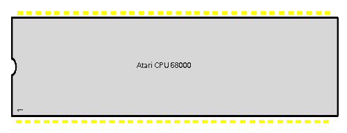

|
|
8.1.8 CPU
Atari CPU MC 68000
CPU 68000 Atari ST-Serie 64 Pin DIL
Pin Signal Type Beschreibung
_________________________________________________________________________
1-5 D4-D0 I/O CPU-Datenbus
6 AS-
7 UDS- I/O
8 LDS- I/O
9 R/W- I/O Signaliert lesen oder schreiben
10 DTACK- I/O Data Acknowledge
11 BG-
12 BGACK-
13 BR-
14,49 Vcc Input +5 Versorgungsspannung
15 CLK Input CPU Takt
16,53 GND Masse, GND
17 HALT- Input
18 RESET- Input Versetzt die CPU in einen definierten
Zustand aus dem neu gestartet wird.
19 VMA-
20 E
21 VPA-
22 BERR-
23 IPL2-
24 IPL1-
25 IPL0-
26 FC2
27 FC1
28 FC0
29-48 A1-A20 Input Adressleitungen
50-52 A21-23 Input Adressleitungen
54-64 D15-D5 Input Datenleitungen
_____________________________________________________________________________
 Abbildung 1 - Atari DIL CPU
Custom Chips (c) Atari Corp.
|
|
|